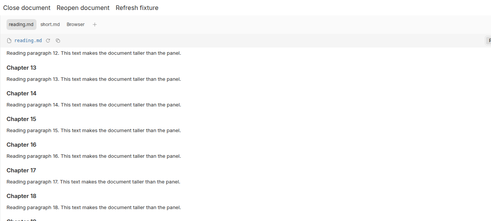
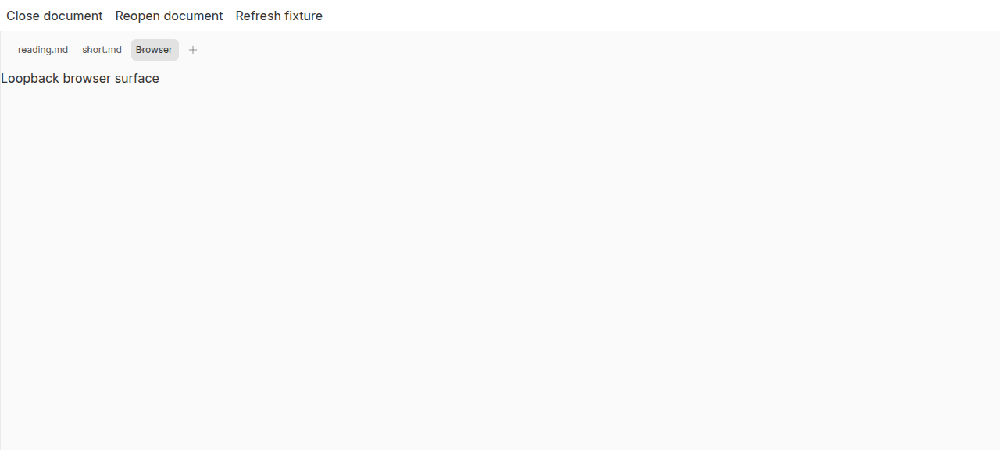
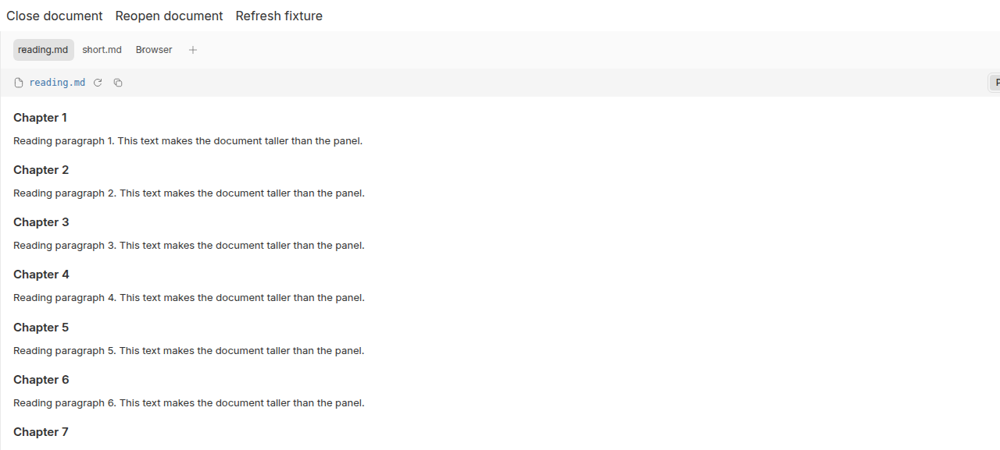

#5181 · Open Markdown tabs discard reading offsets
October 8, 2026 · trusted origin/main 178fd3c2c4aeef162dea517d850ead11f3b034df
Verdict: REPRODUCED · Root-cause confidence: high · reproduction label: confirmed-repro
1. TL;DR
A reader can scroll a Markdown document, leave for another right-panel tab, and find the document back at its beginning on return. The file remains open; its DOM scroll container does not. The secondary panel renders only the active file surface, without retaining the outgoing reading offset. A hyperlink that activates a browser surface follows the same lifecycle. Native Chrome measurements and regression tests reproduce the defect, and the proposed per-open-tab cache fixes both navigation paths.
2. Claims vs findings
| Claim | Finding | Evidence |
|---|---|---|
| Ordinary tab navigation resets reading position. | Verified | Native scrollTop changes from 780 to 0. |
| A hyperlink opening a browser surface also resets position. | Verified at the source UI boundary | Real Markdown link click activates the harness browser surface; 3980 becomes 0 on return. |
| Markdown PRO is unnecessary. | Verified | The harness loads the built-in renderer with no plugin. |
| Fetching the file again causes the reset. | Not necessary | Deterministic ready document content reproduces it; delayed-ready content also loses position. |
| The reporter's installed desktop runtime behaves identically. | Unverified | No installed runtime, browser deck integration, or user account was accessed. |
3. Environment
- Repository is public. Trusted base:
178fd3c2c4aeef162dea517d850ead11f3b034df. Initial clean base:849b7def3b3b429dd969e32d408a3672e73a9df9. - Build/test environment: Linux x86_64 under gVisor, Node v22.19.0, pnpm frozen lockfile, Vitest 4.1.1, Vite 8.0.12.
- Browser: Headless Chrome 149.0.0.0 on Linux; viewport 1400 × 900.
- No agent provider or database is required. Authored deterministic retrieval replaces only the file-query boundary. The panel, WorkspaceFilePreviewTabContent, FilePreview, Markdown renderer, tab controls, and application styles are real source code.
- Compiled fixtures were served on isolated loopback ports 45812 (clean baseline) and 45813 (patched). No live BB server, daemon, production data, or installed desktop was launched.
4. Minimal reproduction
Copy the full focused regression test shown below into apps/app/src/components/secondary-panel/ThreadSecondaryPanel.markdown-scroll.test.tsx in a disposable trusted checkout after installation. No running BB instance is required.
git clone --branch main https://github.com/get-bb/bb.git bb-5181 cd bb-5181 git checkout 178fd3c2c4aeef162dea517d850ead11f3b034df pnpm install --frozen-lockfile --prefer-offline pnpm exec turbo run build --filter=@bb/app pnpm exec turbo run test --filter=@bb/app -- src/components/secondary-panel/ThreadSecondaryPanel.markdown-scroll.test.tsx
Expected: all five tests pass. Actual before the fix: four fail with expected +0 to be 780; the closed-and-reopened control passes. These are measurements of the scroll container, not a visual guess.
For the native browser reproduction, create apps/app/.slopcop-repro, copy each of the five inline fixture files at the end of this report into that directory, and save the inline pack-browser.mjs at the repository root. Confirm the loopback port is unused, then:
mkdir -p apps/app/.slopcop-repro
pnpm --filter @bb/app exec vite build --config .slopcop-repro/vite.config.ts
node pack-browser.mjs "$PWD" /tmp/issue-5181.b64
node -e 'const http=require("node:http"),fs=require("node:fs");http.createServer((request,response)=>{response.writeHead(200,{"Content-Type":"text/html; charset=utf-8","Content-Encoding":"gzip"});response.end(Buffer.from(fs.readFileSync("/tmp/issue-5181.b64","utf8"),"base64"));}).listen(45812,"127.0.0.1")'
- Open http://127.0.0.1:45812 on the machine serving the fixture.
- Scroll reading.md to an offset of 780 pixels; select Browser, then reading.md.
- Observe offset zero. Repeat by scrolling to the Visit browser link, clicking it, then selecting reading.md.
- Switch from the long document to short.md and back. The short layout naturally clamps the shared wrapper; the long offset is lost.
The browser-scenarios.js runs these plus loading and close/reopen controls using fresh accessibility references. Its browser surface is a local stand-in; it does not fetch the hyperlink destination.
| Scenario | Expected offset | Trusted base | Patched |
|---|---|---|---|
| Browser tab return | 780 | 0 | 780 |
| Hyperlink return | 3980 | 0 | 3980 |
| Short document clamping | 780 | 0 | 780 |
| Ready after loading | 780 | 0 | 780 |
| Close and reopen | 0 | 0 | 0 |




Full focused regression test
// @vitest-environment jsdom
import { useState } from "react";
import { cleanup, fireEvent, render, screen } from "@testing-library/react";
import { afterEach, describe, expect, it, vi } from "vitest";
import { PanelGroup } from "react-resizable-panels";
import { TooltipProvider } from "@bb/shared-ui/tooltip";
import {
createBrowserFixedPanelTab,
createWorkspaceFilePreviewFixedPanelTab,
} from "@/lib/fixed-panel-tabs-state";
import { createQueryClientTestHarness } from "@/test/queryClientTestHarness";
import {
ThreadSecondaryPanel,
type SecondaryPanelRenderableTab,
} from "./ThreadSecondaryPanel";
import { WorkspaceFilePreviewTabContent } from "./ThreadSecondaryPanelTabContent";
const loading = vi.hoisted(() => ({ current: false }));
vi.mock("@/hooks/queries/environment-queries", () => ({
useEnvironment: () => ({ data: { path: "/workspace" } }),
useEnvironmentDiffFiles: () => ({ data: undefined, isLoading: false }),
useEnvironmentWorkStatus: () => ({ data: undefined }),
useEnvironmentFilePreview: (_environmentId: string, path: string) => ({
data: loading.current
? undefined
: {
kind: "text",
content:
path === "short.md"
? "# Short"
: "# Reading\n\n[Visit](https://example.invalid/)\n\n".repeat(60),
mimeType: "text/markdown",
name: path,
path,
url: `/content/${path}`,
},
isLoading: loading.current,
isFetching: false,
error: null,
refetch: () => {},
}),
}));
const noop = () => {};
function Harness() {
const documents = ["reading.md", "short.md"].map((path) =>
createWorkspaceFilePreviewFixedPanelTab({
environmentId: "env_scroll",
projectId: "proj_scroll",
tab: {
path,
lineRange: null,
source: { kind: "working-tree" },
statusLabel: null,
},
}),
);
const [browserTab] = useState(() =>
createBrowserFixedPanelTab({ environmentId: null, url: "about:blank" }),
);
const [activeId, setActiveId] = useState(documents[0].id);
const [closed, setClosed] = useState(false);
const tabs: SecondaryPanelRenderableTab[] = documents
.filter((document) => !closed || document.path !== "reading.md")
.map((document) => ({
tab: document,
label: document.path,
leadingVisual: null,
statusLabel: null,
onClose: () => {
setClosed(true);
setActiveId(browserTab.id);
},
onSelect: () => setActiveId(document.id),
renderContent: () => (
<WorkspaceFilePreviewTabContent
activePath={document.path}
environmentId={document.environmentId}
isPanelOpen
lineRange={null}
source={document.source}
statusLabel={null}
markdownLinkRouting={{
onOpenLink: () => {
setActiveId(browserTab.id);
return true;
},
}}
/>
),
}));
tabs.push({
tab: browserTab,
label: "Browser",
leadingVisual: null,
statusLabel: null,
onClose: noop,
onSelect: () => setActiveId(browserTab.id),
renderContent: () => null,
});
return (
<>
<button
onClick={() => {
setClosed(true);
setActiveId(browserTab.id);
}}
>
Close document
</button>
<button
onClick={() => {
setClosed(false);
setActiveId(documents[0].id);
}}
>
Reopen document
</button>
<PanelGroup direction="horizontal">
<ThreadSecondaryPanel
activeTab={tabs.find((tab) => tab.tab.id === activeId)?.tab ?? null}
canUseGitUi={false}
fixedTabs={[]}
tabs={tabs}
isOpen
metadataContent={null}
onClose={noop}
onCollapse={noop}
onTabReorder={noop}
onOpenNewTab={noop}
onPanelFocus={noop}
onToggleConversationCollapse={noop}
isConversationCollapsed={false}
renderAsDrawer={false}
renderBrowserDeck={(active) =>
active ? <div>Browser content</div> : null
}
/>
</PanelGroup>
</>
);
}
function renderHarness() {
const { wrapper: Wrapper } = createQueryClientTestHarness();
const content = () => (
<Wrapper>
<TooltipProvider>
<Harness />
</TooltipProvider>
</Wrapper>
);
return { ...render(content()), content };
}
function scrollContainer() {
const container = document.querySelector<HTMLDivElement>(
"[data-file-preview-scroll-container]",
);
if (!container) throw new Error("Missing file scroll container");
return container;
}
function scrollTo(position: number) {
scrollContainer().scrollTop = position;
fireEvent.scroll(scrollContainer());
}
function selectTab(name: string) {
fireEvent.click(screen.getByRole("button", { name }));
}
afterEach(() => {
cleanup();
loading.current = false;
window.localStorage.clear();
});
describe("Markdown reading position in open secondary-panel tabs", () => {
it.each(["tab", "hyperlink"])(
"retains position after leaving through a %s",
(navigation) => {
renderHarness();
scrollTo(780);
if (navigation === "tab") selectTab("Browser");
else fireEvent.click(screen.getAllByRole("link", { name: "Visit" })[0]);
expect(
document.querySelector("[data-file-preview-scroll-container]"),
).toBeNull();
selectTab("reading.md");
expect(scrollContainer().scrollTop).toBe(780);
},
);
it("retains separate document positions when the outgoing layout clamps", () => {
renderHarness();
scrollTo(780);
selectTab("short.md");
scrollTo(0);
selectTab("reading.md");
expect(scrollContainer().scrollTop).toBe(780);
scrollTo(920);
selectTab("short.md");
expect(scrollContainer().scrollTop).toBe(0);
selectTab("reading.md");
expect(scrollContainer().scrollTop).toBe(920);
});
it("waits for ready Markdown content before restoring", () => {
const harness = renderHarness();
scrollTo(780);
selectTab("Browser");
loading.current = true;
selectTab("reading.md");
scrollTo(0);
loading.current = false;
harness.rerender(harness.content());
expect(scrollContainer().scrollTop).toBe(780);
});
it("forgets a closed document even when reopening uses the same tab id", () => {
renderHarness();
scrollTo(780);
fireEvent.click(screen.getByRole("button", { name: "Close document" }));
fireEvent.click(screen.getByRole("button", { name: "Reopen document" }));
expect(scrollContainer().scrollTop).toBe(0);
});
});
5. Root cause
ThreadSecondaryPanel resolves only the selected surface's content. Selecting a browser surface removes the file-preview scroll wrapper; returning recreates it with its native default offset of zero. Switching between files instead reuses the wrapper, so a short incoming layout can clamp the old offset. MarkdownFilePreview only renders the body and has no save/restore lifecycle.
The missing owner is the lifetime of the open panel tab, not the fetch cache or Markdown text. Saving an offset during outgoing cleanup is unsafe because the incoming layout may already have reduced it. Restoring against the loading skeleton is also unsafe because that skeleton cannot scroll to the saved offset.
6. Proposed fix
Keep ephemeral positions keyed by open tab ID in the secondary panel. Provide a stable position entry to the file body; record native scroll events while the ready Markdown body is mounted, and restore in its layout effect. Remove listeners without saving during cleanup. Prune entries when their tabs close, so reopening an equivalent tab begins at the top. The verified patch changes four existing-subsystem files, with 284 added and 6 deleted text lines (290 total), including the regression test; it changes no persisted data, dependency, public API, protocol, or schema.
7. Verification
The same agent repeated the reproduction in a second clean temporary worktree at the recorded trusted commit. This is a second clean run, not an independent reviewer. Both worktrees installed with the frozen lockfile. The initial full trusted build completed 65 tasks successfully. The clean verification worktree also built the app through Turbo and ran the same newly authored regression test: four lost-position failures and one close/reopen pass.
Main advanced during investigation. The branch was refreshed onto 178fd3c2c4aeef162dea517d850ead11f3b034df, and the clean verification worktree was moved to that exact trusted revision without any production patch. The regression still failed in the same four cases there. The native browser fixture was rebuilt from this revision, using a separate loopback port. No root-cause correction was necessary.
After the production fix, the focused and neighboring suites pass 67 tests across four files. App typecheck and lint pass; lint reports 250 existing warnings and zero errors. git diff --check passes, and the patch contains no binary file changes. The rebuilt native browser fixture passes all five scenarios, with the expected exact offsets shown above.
pnpm exec turbo run test --filter=@bb/app -- src/components/secondary-panel/ThreadSecondaryPanel.markdown-scroll.test.tsx src/components/secondary-panel/ThreadSecondaryPanel.collapseControl.test.tsx src/components/secondary-panel/FilePreview.test.tsx src/components/secondary-panel/ThreadSecondaryPanelTabContent.markdown-images.test.tsx pnpm exec turbo run typecheck lint --filter=@bb/app git diff --check git diff --numstat origin/main
8. Related issues and pull requests
No linked open pull request appeared in GitHub cross-reference metadata or the issue-number PR search at the final pre-fix check. Existing Markdown/UI issue classifications were used only as triage patterns; no different issue is claimed to be the same defect.
9. Appendix and limitations
- Raw test logs are retained outside the public reports repository. Exact browser measurements and all reproduction code are inline below.
- The full installed-desktop flow, Safari, plugin renderers, and late-loading image geometry were not verified. The source UI lifecycle and reported Markdown navigation paths were.
- Issue content was treated only as untrusted claims. No supplied script, branch, patch, external URL, or instruction was executed or fetched.
10. Inline reproduction files
These are investigator-authored source fixtures, not code copied from the issue. Save the displayed file contents under the paths described in the reproduction steps.
index.html
<!doctype html><html><head><title>Secondary-panel scroll verification</title></head><body><div id="root"></div><script type="module" src="/main.tsx"></script></body></html>
main.tsx
import { useState } from "react";
import { createRoot } from "react-dom/client";
import { PanelGroup } from "react-resizable-panels";
import { TooltipProvider } from "@bb/shared-ui/tooltip";
import { createQueryClientTestHarness } from "../src/test/queryClientTestHarness";
import { ThreadSecondaryPanel, type SecondaryPanelRenderableTab } from "../src/components/secondary-panel/ThreadSecondaryPanel";
import { WorkspaceFilePreviewTabContent } from "../src/components/secondary-panel/ThreadSecondaryPanelTabContent";
import { createBrowserFixedPanelTab, createWorkspaceFilePreviewFixedPanelTab } from "../src/lib/fixed-panel-tabs-state";
import "./style.css";
const noop = () => {};
const documents = ["reading.md", "short.md"].map((path) => createWorkspaceFilePreviewFixedPanelTab({
environmentId: "env_repro", projectId: "proj_repro",
tab: { path, lineRange: null, source: { kind: "working-tree" }, statusLabel: null },
}));
const browserTab = createBrowserFixedPanelTab({ environmentId: null, url: "about:blank" });
const { wrapper: Wrapper } = createQueryClientTestHarness();
function Reproduction() {
const [activeId, setActiveId] = useState(documents[0].id);
const [closed, setClosed] = useState(false);
const [revision, setRevision] = useState(0);
const tabs: SecondaryPanelRenderableTab[] = documents.filter((document) => !closed || document.path !== "reading.md").map((document) => ({
tab: document, label: document.path, leadingVisual: null, statusLabel: null,
onSelect: () => setActiveId(document.id), onClose: noop,
renderContent: () => <WorkspaceFilePreviewTabContent activePath={document.path}
environmentId={document.environmentId} isPanelOpen lineRange={null}
source={document.source} statusLabel={null}
markdownLinkRouting={{ onOpenLink: () => { setActiveId(browserTab.id); return true; } }} />,
}));
tabs.push({ tab: browserTab, label: "Browser", leadingVisual: null, statusLabel: null,
onSelect: () => setActiveId(browserTab.id), onClose: noop, renderContent: () => null });
return <div className="flex h-full flex-col" data-revision={revision}>
<div className="flex gap-4 p-2">
<button onClick={() => { setClosed(true); setActiveId(browserTab.id); }}>Close document</button>
<button onClick={() => { setClosed(false); setActiveId(documents[0].id); }}>Reopen document</button>
<button onClick={() => setRevision(revision + 1)}>Refresh fixture</button>
</div>
<div className="min-h-0 flex-1"><PanelGroup direction="horizontal">
<ThreadSecondaryPanel activeTab={tabs.find((tab) => tab.tab.id === activeId)?.tab ?? null}
canUseGitUi={false} fixedTabs={[]} tabs={tabs} isOpen metadataContent={null}
onClose={noop} onCollapse={noop} onTabReorder={noop} onOpenNewTab={noop}
onPanelFocus={noop} onToggleConversationCollapse={noop} isConversationCollapsed={false}
renderAsDrawer={false} renderBrowserDeck={(active) => active ? <div>Loopback browser surface</div> : null} />
</PanelGroup></div>
</div>;
}
createRoot(document.getElementById("root")!).render(<Wrapper><TooltipProvider><Reproduction /></TooltipProvider></Wrapper>);
queries.ts
export * from "../src/hooks/queries/environment-queries";
export const useEnvironment = () => ({ data: { path: "/workspace" } });
export const useEnvironmentWorkStatus = () => ({ data: undefined });
export const useEnvironmentDiffFiles = () => ({ data: undefined, isLoading: false });
export const useEnvironmentFilePreview = (_environmentId: string, path: string) => ({
data: new URLSearchParams(location.search).has("loading") ? undefined : {
kind: "text", mimeType: "text/markdown", name: path, path, url: `/content/${path}`,
content: path === "short.md" ? "# Short document" : Array.from({ length: 70 }, (_, index) =>
`## Chapter ${index + 1}\n\nReading paragraph ${index + 1}. This text makes the document taller than the panel.\n\n`
).join("") + "[Visit browser](https://example.invalid/)",
},
isLoading: new URLSearchParams(location.search).has("loading"),
isFetching: false, error: null, refetch: () => {},
});
style.css
@import "tailwindcss";
@import "../src/app.css";
@source "../src";
html, body, #root { height: 100%; margin: 0; }
vite.config.ts
import path from "node:path";
import { defineConfig } from "vite";
import react from "@vitejs/plugin-react";
import tailwindcss from "@tailwindcss/vite";
import { sharedUiEnvSeam } from "../vite-shared-ui-seam";
import { forkablePluginPaths } from "../vite-forkable-plugin-paths";
export default defineConfig({
root: __dirname,
plugins: [sharedUiEnvSeam(), forkablePluginPaths(path.resolve(__dirname, "../src")), react(), tailwindcss()],
resolve: { conditions: ["source"], alias: [
{ find: "@/hooks/queries/environment-queries", replacement: path.resolve(__dirname, "queries.ts") },
{ find: "@", replacement: path.resolve(__dirname, "../src") },
] },
server: { host: "127.0.0.1", fs: { allow: [path.resolve(__dirname, "../../..")] } },
build: { outDir: "dist", assetsInlineLimit: 10000000, rollupOptions: { output: { inlineDynamicImports: true } } },
});
pack-browser.mjs
import fs from "node:fs";
import path from "node:path";
import zlib from "node:zlib";
const dist = path.join(process.argv[2], "apps/app/.slopcop-repro/dist");
const assets = fs.readdirSync(path.join(dist, "assets"));
const script = fs.readFileSync(path.join(dist, "assets", assets.find(name => name.endsWith(".js"))), "utf8");
const style = fs.readFileSync(path.join(dist, "assets", assets.find(name => name.endsWith(".css"))), "utf8");
const html = '<!doctype html><html><head><meta charset="utf-8"><title>Secondary-panel scroll verification</title><style>' + style.replaceAll("</style", "<\\/style") + '</style></head><body><div id="root"></div><script type="module">' + script.replaceAll("</script", "<\\/script") + '</script></body></html>';
fs.writeFileSync(process.argv[3], zlib.gzipSync(html).toString("base64"));
browser-scenarios.js
const page = await browser.getPage("main");
const settle = () => page.evaluate(() => new Promise(resolve => requestAnimationFrame(() => requestAnimationFrame(resolve))));
const position = () => page.evaluate(() => document.querySelector("[data-file-preview-scroll-container]").scrollTop);
const scrollTo = async (offset) => {
await page.evaluate(value => { document.querySelector("[data-file-preview-scroll-container]").scrollTop = value; }, offset);
await settle();
};
const clickButton = async (name) => {
const snapshot = await page.snapshot();
const line = snapshot.split("\n").find(line => line.includes(`button "${name}"`));
if (!line) throw new Error(`Button not found: ${name}`);
const reference = line.match(/\[ref=(e\d+)\]/)[1];
await page.click(`ref/${reference}`);
await settle();
};
const results = [];
await scrollTo(780);
const before = await position();
await page.shot({ type: "jpeg", maxEdge: 960, quality: 70 });
await clickButton("Browser");
await page.shot({ type: "jpeg", maxEdge: 960, quality: 70 });
await clickButton("reading.md");
results.push({ scenario: "browser tab return", expected: before, actual: await position() });
await page.shot({ type: "jpeg", maxEdge: 960, quality: 70 });
await page.evaluate(() => { document.querySelector("[data-file-preview-scroll-container]").scrollTop = 999999; });
await settle();
const linkBefore = await position();
const snapshot = await page.snapshot();
const linkRef = snapshot.split("\n").find(line => line.includes('link "Visit browser"')).match(/\[ref=(e\d+)\]/)[1];
await page.click(`ref/${linkRef}`);
await settle();
await clickButton("reading.md");
results.push({ scenario: "hyperlink return", expected: linkBefore, actual: await position() });
await scrollTo(780);
await clickButton("short.md");
await clickButton("reading.md");
results.push({ scenario: "short document clamping", expected: 780, actual: await position() });
await scrollTo(780);
await clickButton("Browser");
await page.evaluate(() => history.replaceState(null, "", "?loading"));
await clickButton("reading.md");
await page.evaluate(() => history.replaceState(null, "", location.pathname));
await clickButton("Refresh fixture");
results.push({ scenario: "ready after loading", expected: 780, actual: await position() });
await scrollTo(780);
await clickButton("Close document");
await clickButton("Reopen document");
results.push({ scenario: "closed and reopened", expected: 0, actual: await position() });
console.log(JSON.stringify({ results, passed: results.filter(result => result.actual === result.expected).length, failed: results.filter(result => result.actual !== result.expected).length }));
browser-before.json
{
"results": [
{
"scenario": "browser tab return",
"expected": 780,
"actual": 0
},
{
"scenario": "hyperlink return",
"expected": 3980,
"actual": 0
},
{
"scenario": "short document clamping",
"expected": 780,
"actual": 0
},
{
"scenario": "ready after loading",
"expected": 780,
"actual": 0
},
{
"scenario": "closed and reopened",
"expected": 0,
"actual": 0
}
],
"passed": 1,
"failed": 4
}
browser-after.json
{
"results": [
{
"scenario": "browser tab return",
"expected": 780,
"actual": 780
},
{
"scenario": "hyperlink return",
"expected": 3980,
"actual": 3980
},
{
"scenario": "short document clamping",
"expected": 780,
"actual": 780
},
{
"scenario": "ready after loading",
"expected": 780,
"actual": 780
},
{
"scenario": "closed and reopened",
"expected": 0,
"actual": 0
}
],
"passed": 5,
"failed": 0
}
> AGENT GENERATED